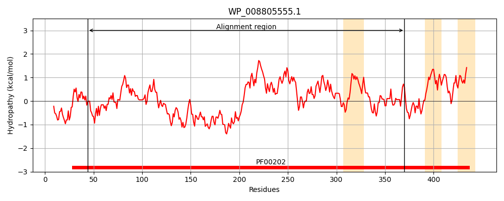
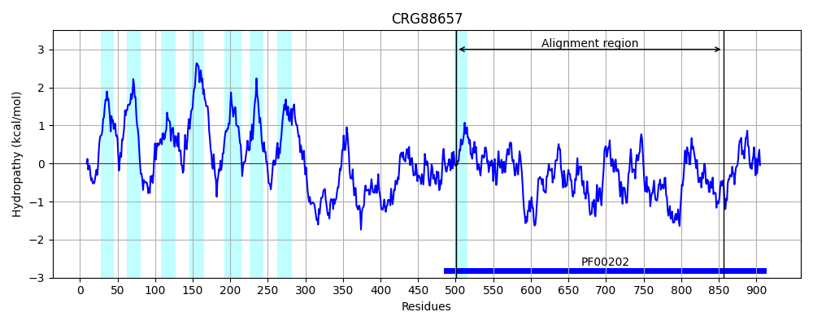
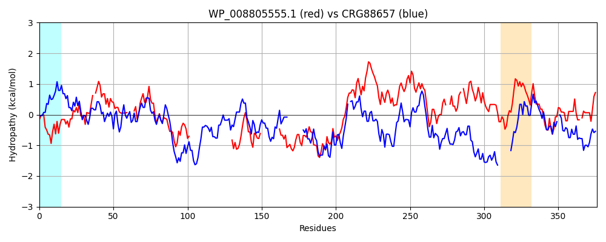

Hit Accession: CRG88657
Hit TCID: 9.B.313.1.2
Hit Description: gnl|BL_ORD_ID|2913 gnl|TC-DB|CRG88657|9.B.313.1.2 4-aminobutyrate aminotransferase / (S)-3-amino-2-methylpropionate transaminase [Talaromyces islandicus]
Mach Len: 376
e:0.000000
Query TMS Count : 3
Hit TMS Count: 8
TMS-Overlap Score: 0.000000
Predicted Substrates:None
BLAST Alignment:
Score: 257 , Bit scores: 103 bits, E-value: 1.4e-23, Alignment length: 376, Percentage identity: 26
Query: 44 GCELWDYEGNTWLDFSSQLVNVNIGYQHPRVLAAMKA-QLETLVTIAPATANLARGEAAK----RIVDLAPAGFSKVFFTNAGADANENAIRMARLYTGRDK----------------------------VLSAYRSYHGNTGSAIAATG------------DWRRVPNEFSRGHVHFFNPYLYRSEFNAATEEEECQRALAHLRRIIECEGPTAIAAILLESIPGTAGILVPPAGYMQGVRALADEFGIVLILDEVMAGFGRTGSWFAFEQDGV--VPDLVTFA-KGVNAGYVPAGGVLISEPIARYFDDHFFAGGLTYSGHPLAMAAIVATIDAMKEEKVVENAAYIGNEVLRPGLEALAEKH-AIIGEVRGRG 370
G L D +GN LD +Q+ ++ +GY +P + AA+ ++ + PA N + + ++ AP G ++VF AG+DANE A + A +Y + + ++S ++HG +++ T DW + P F Y E + E +R LA RII+ E +AA+++E I G + QG+R + ++ I+DEV G G TG ++A + + PDLVTF+ K AGY L R F+ T+ G P A ++ ++ + +VEN A G + L GLE+LA+K+ I +RG+G
Sbjct: 501 GNYLVDLDGNVLLDVYAQIASIPVGYNNPHLAAAVNTPEMVRALIDRPALGNFPSADWSNILKTGLLRAAPKGLNQVFTALAGSDANETAYKAAFMYRRQQERGGANVDFSDADTTSAMLNQSPGSPNMSIMSFKSAFHGRLFGSLSTTRSKPIHKLDIPAFDWPQAP----------FPALKYPLEEHVQENAAEEKRCLAEAERIIK-EFHNPVAAVVVEPIQSEGGDNHASPAFFQGLRDITKRNNVLFIVDEVQTGVGATGKFWAHDHWNLQSPPDLVTFSKKAQTAGYYYGNPALRPNKPYRQFN--------TWMGDPARAILFRAILEEIESKGLVENTAATG-DYLYNGLESLAQKYPQAIQNLRGKG 856 | Protein Hydropathy Plots: |
|---|
|  |  |
Pairwise Alignment-Hydropathy Plot:
|
|---|
|  |